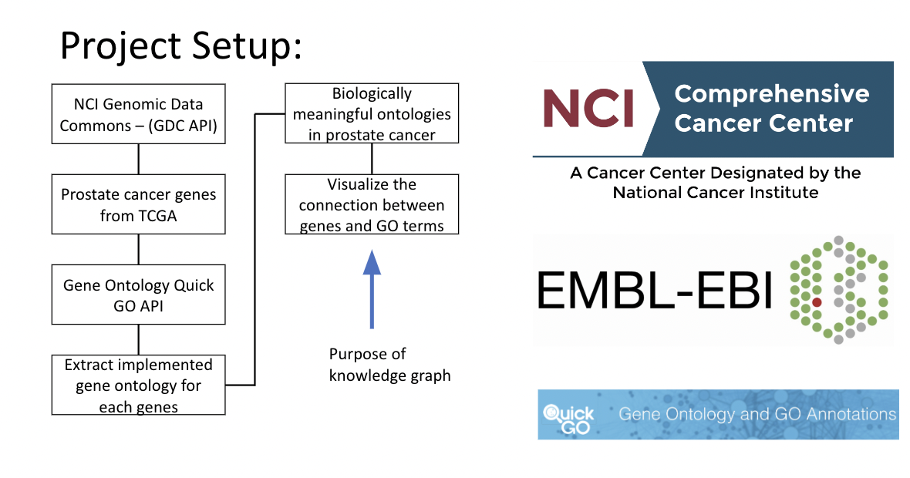
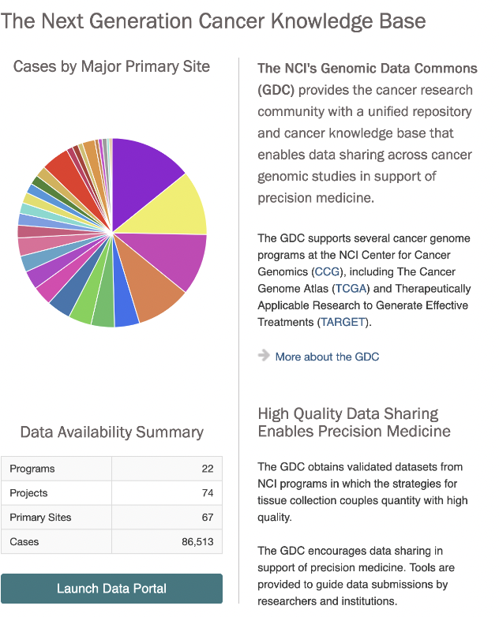
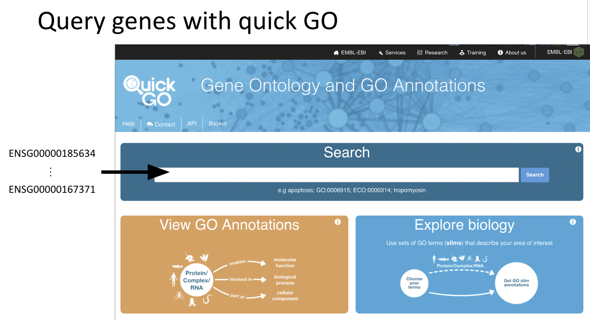
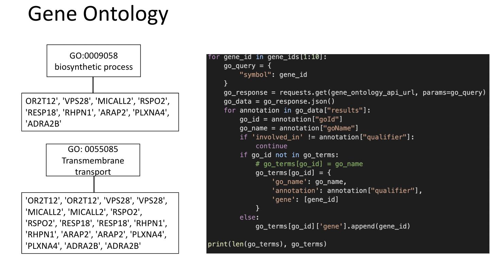
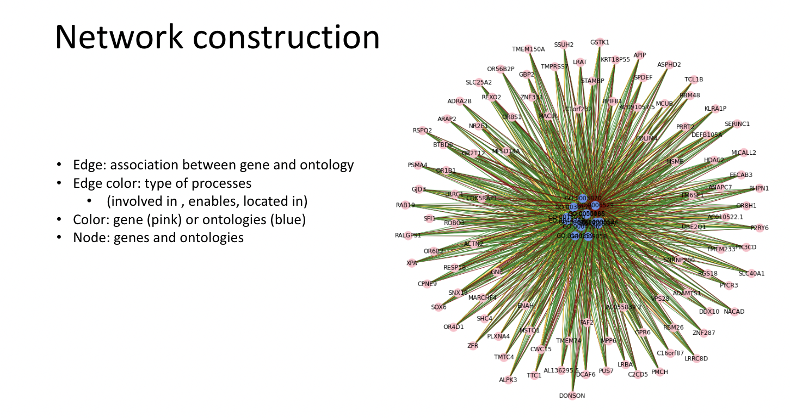

Prostate Cancer Gene Ontology Analysis
Explored by: Helena Winata, Jieun Oh, Xinzhe Li
Description.

Query for NCI Cancer Knowledge Base

Query genes with quick GO

Gene Ontology

Network

Tutorial: Google Colab notebook is available here
QUICK GO API:
- UniProt Consortium. (2023). QuickGO [online]. EMBL-EBI, European Bioinformatics Institute. https://www.ebi.ac.uk/QuickGO (accessed March 11, 2023)
GDC API:
- National Cancer Institute. Genomic Data Commons Data Portal API [online]. GDC Data Portal, National Cancer Institute. https://api.gdc.cancer.gov/ (accessed March 11, 2023)